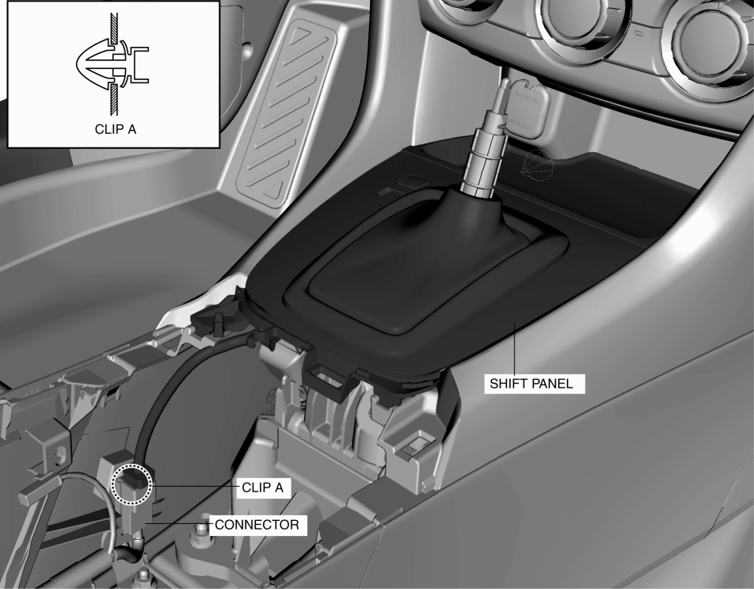
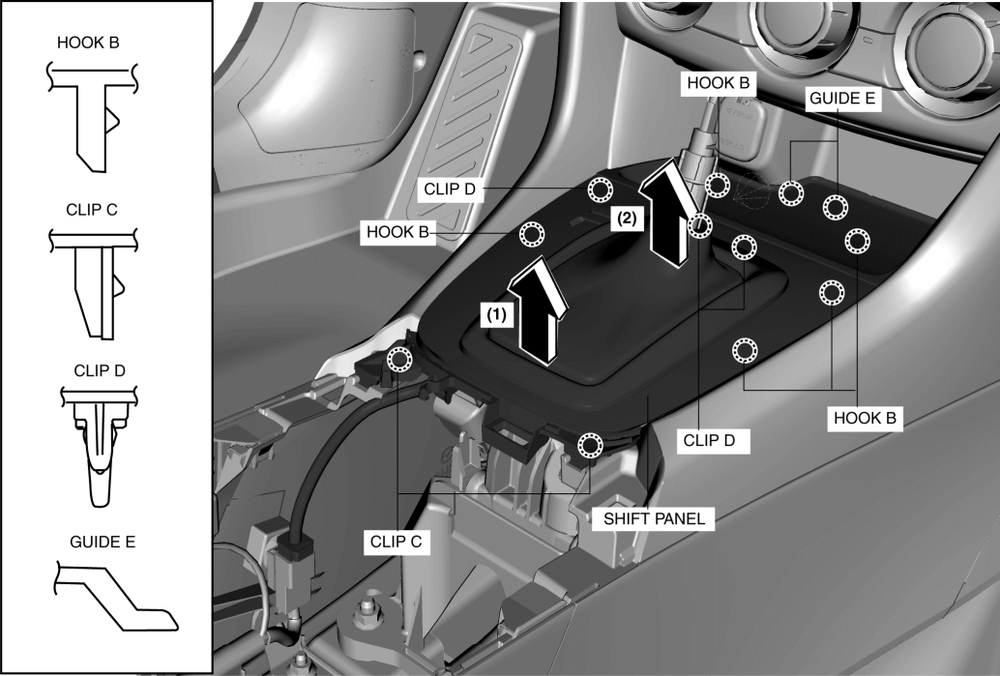
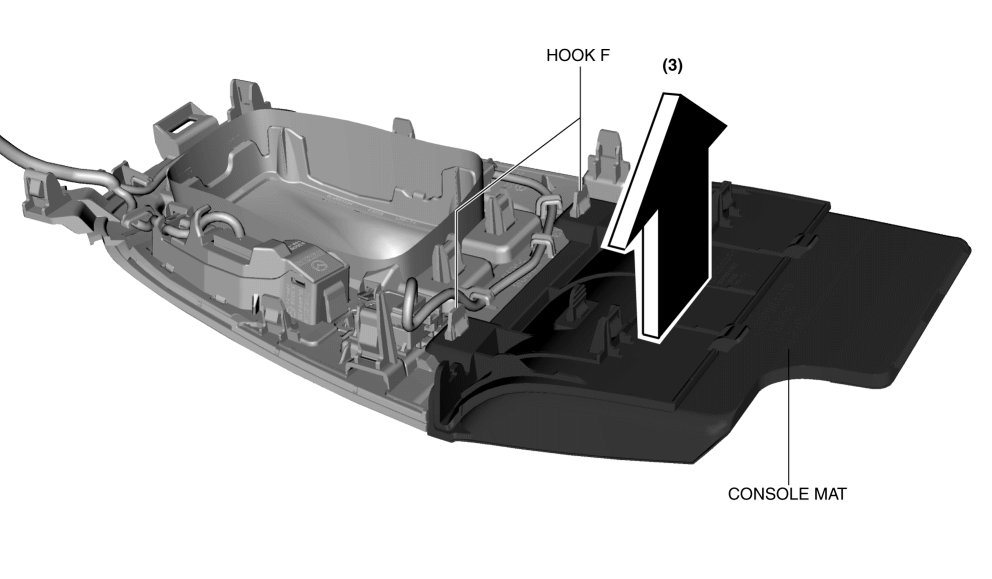
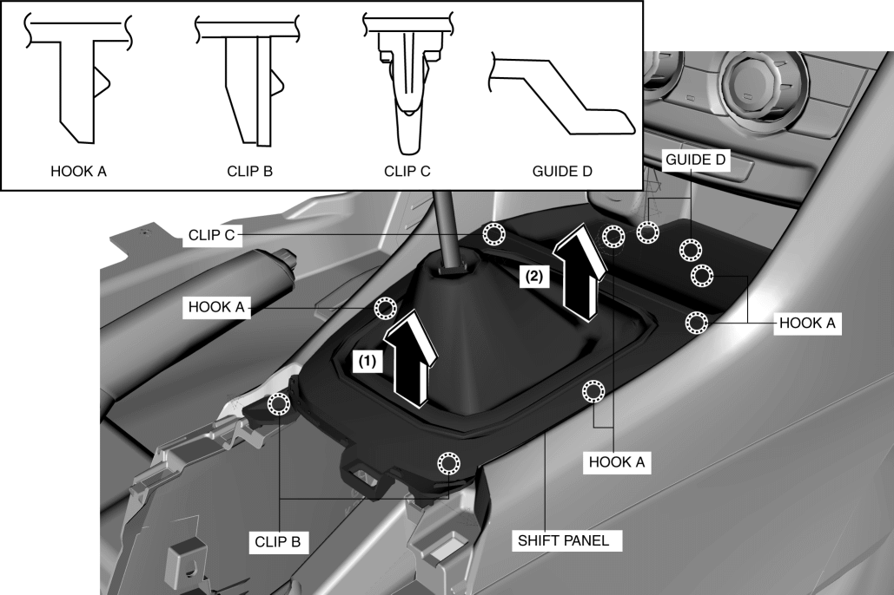
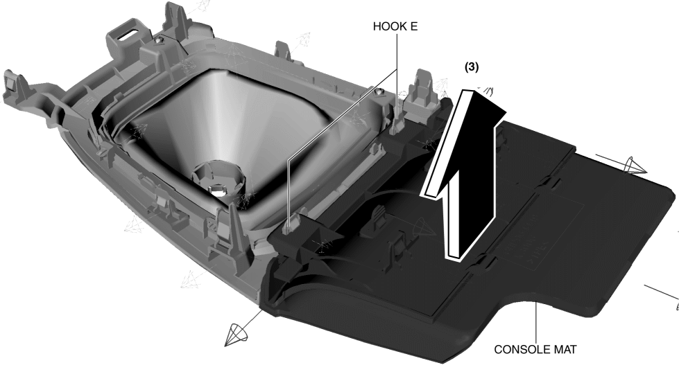

< Previous
Next >
2014 -
Mazda6 -
Body and Accessories
SHIFT PANEL REMOVAL/INSTALLATION
ATX
1. Disconnect the negative battery cable. (See NEGATIVE BATTERY CABLE DISCONNECTION/CONNECTION [SKYACTIV-G 2.5].)
2. Remove the following parts: a. Upper panel (See UPPER PANEL REMOVAL/INSTALLATION.)
b. Selector lever knob (See AUTOMATIC TRANSAXLE SHIFT MECHANISM REMOVAL/INSTALLATION.)
3. Remove clip A.

4. Disconnect the connector.
5. Remove the shift panel in the direction of the arrows in the order of (1), (2) while detaching hooks B, clips C, clips D, and guides E.

6. Remove the console mat in the direction of the arrow (3) shown in the figure. while detaching hooks F.

7. Install in the reverse order of removal.
MTX
1. Disconnect the negative battery cable. (See NEGATIVE BATTERY CABLE DISCONNECTION/CONNECTION [SKYACTIV-G 2.5].)
2. Remove the following parts: a. Upper panel (See UPPER PANEL REMOVAL/INSTALLATION.)
b. Shift lever knob (See MANUAL TRANSAXLE SHIFT MECHANISM REMOVAL/INSTALLATION [C66M-R].)
3. Remove the shift panel in the direction of the arrows in the order of (1), (2) while detaching hooks A, clips B, clips C, and guides D.

4. Remove the console mat in the direction of the arrow (3) shown in the figure. while detaching hooks E.

5. Install in the reverse order of removal.
< Previous
Next >
© 2012 Mazda North American Operations, U.S.A.